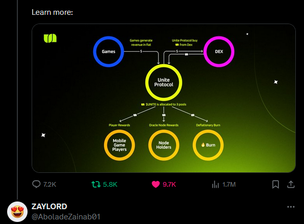

 The Student Industrial Work Experience Scheme (SIWES) was established by the Industrial Training Fund (ITF) in 1973 to enable students of tertiary institution have technical knowledge of industrial work base on their course of study before the completion of their program in their respective institutions. The major benefit accruing to students who participate conscientiously in Students Industrial Work Experience Scheme (SIWES) are the skills and competencies they acquire. The relevant production skills remain a part of the recipients of industrial training as life-long assets which cannot be taken away from them. This is because the knowledge and skills acquired through training are internalized and become relevant when required to perform jobs or functions.
SIWES in Nigeria is organized and coordinated by the Industrial Training Fund (ITF) for a period of Three (3) months to One year, depending on the Institution or Faculty involved. ITF’s mandate is to promote and encourage the acquisition of skills in Commerce and Industry with the view of generating numerously trained man power, which will gather basic practical knowledge needed in the industrial world out there. SIWES is a compulsory programme which all national diploma students must undergo as part of the requirements for the award of the NATIONAL DIPLOMA of the college.
Forestry technical education started in Nigeria with the establishment in Zaria in 1939. In the same year, the school was moved to Moor Plantation, Ibadan from where it was finally moved to the present site, Forest Hill, Jericho Ibadan in 1941. As at 1941, the Federal School of Forestry was the only Higher Institution of Forestry Education in African Sub-region until the early sixties. Since its establishment, the School has trained and is still training students from Nigeria and other African countries notably Ghana, Cameroon, Sierra-Leone, Liberia, Gambia, Uganda and Kenya.